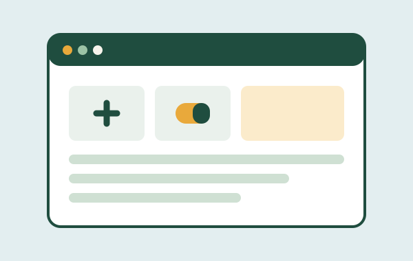
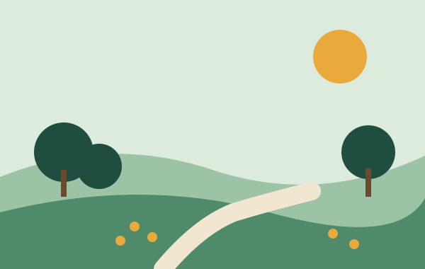
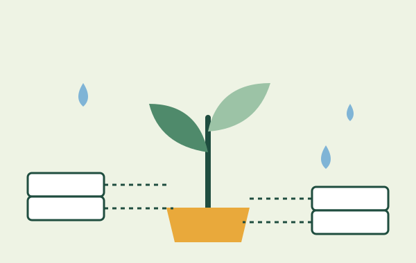

Pharmacy and Medicine Management System
A system to keep track of medicines, stock levels and pharmacy records in one place, so staff spend less time on paperwork and can find information quickly.
Hello, I'm
I'm a Bachelor of Information Systems student who likes turning everyday problems into working software and well-organised data.
I started my path in Information Systems with a Foundation programme at ECU and I'm now studying for my Bachelor of Information Systems. Along the way I've built a landscaping project, a pharmacy and medicine management system, and a plant care database.
I enjoy work where design and practicality meet: a clear screen, a tidy database, and a system that people can actually use. Learning Japanese alongside my degree has also taught me patience and attention to detail.
Career goal: to work as a systems or database professional, building reliable information systems for organisations such as healthcare providers, and to keep growing through further certifications and real projects.
Covers systems analysis, databases, programming and web development, with hands-on course projects.
Built the academic base for degree-level study, including the landscaping project.
Strong results across the school curriculum.
Entry-level proficiency in reading, writing and everyday conversation.

A system to keep track of medicines, stock levels and pharmacy records in one place, so staff spend less time on paperwork and can find information quickly.

A landscaping design completed during my Foundation at ECU, planning outdoor space with paths, planting areas and trees that work together.

A PostgreSQL database for managing plants, care tasks and watering schedules. It includes an ERD, a use case diagram, sample data and indexes tested for faster queries.
Awarded for successfully completing my course of study.
Achieved in my school examination.
Strong Ordinary Level results.
Passed the beginner-level Japanese exam.